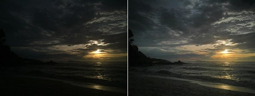
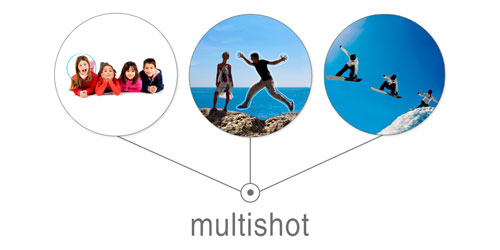
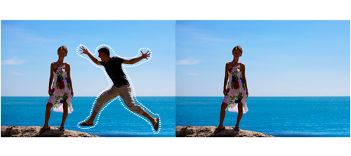
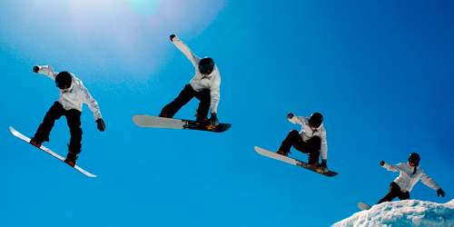
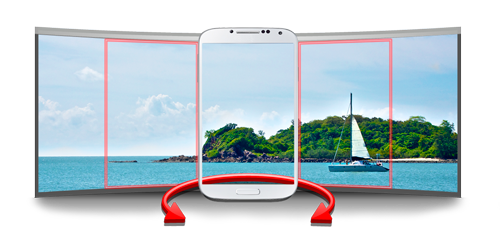
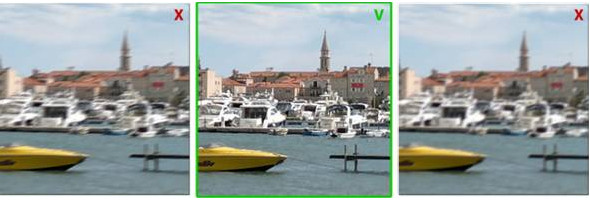

Shoot single still image.
DRO option (Dynamic Range Optimization) - Almalence's new technology makes camera see like human eye. Extremely fast solution that automatically improves the images in 100% cases and can substitute HDR in most cases.
Shoot series of still images.
Shoot series of still images with different exposure.
The HDR technique allows you to capture details in bright and dark areas and have them merged in a single photo. Capture time differs on device and camera capabilities. Available settings to adjust contrast, color vividness and exposure of result image and other options
It's our really SUPER all-in-one solution to improve camera!
Can be used:
- in low light - resolution improvement, noise reduction, shadow recovery
- when bright back-light causes object of interest to be lost in shadows. Super Sensor recover automatically and noise-free
- scenes with beach and snow - automatic adjustment of typical auto-exposure failures (no user interaction!). What should be white is white now. Low-contrast details are not lost but enhanced. Miniature details revealed.
- Due to DR enhancement by up to 18db, high dynamic range scenes are handled well by Super Sensor.
- Super zoom - presenting a zoomed-in image from mobile device can be a frustrating experience. Not with Super Sensor.
- Perfect for documents: superior resolution and contrast maximisation. Always.
Available only for devices with new camera API full support
Capture high quality images in low light. Use your mobile camera everywhere, in any conditions, no matter how dark it is. Depending on image size selected will take still or preview images
Captures video with different resolutions. Also ABC video mode has such great features as :
- HDR video (available on devices with Android 4.3 and higher)
- Pause
- Time lapse
Negative shutter lag - keeps taking the images UNTIL you tap the shutter. After clicking the shutter button you have a series of photos taken before the click. You can then pick the photos where the moment is captured.
Takes series of images and provides processing selection.


Shoot and remove unwanted moving objects - cars, people etc.
Shoot group of your friends and select best faces!

Shoot an action and combine images into one sequence shot!
High definition and fast panoramas!

Take up to 360 degrees and up to 100MPix HD panoramas!
Analyzing series of shots, Best Shot chooses the best one, increasing the chances of having a blur free image.

Best shot will automatically select the best one and save it. Ideal to use when you're moving and trying to take quick shot!
Main help page